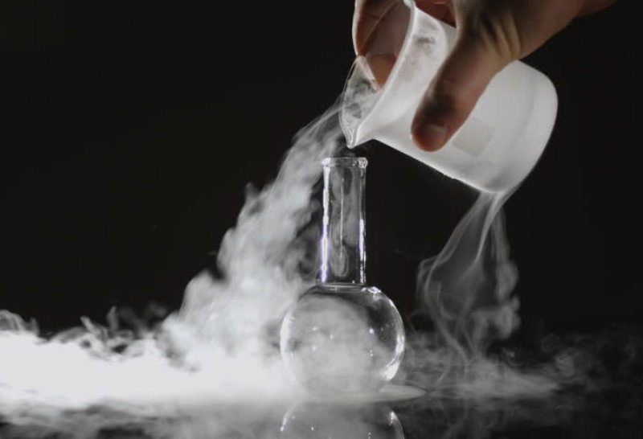
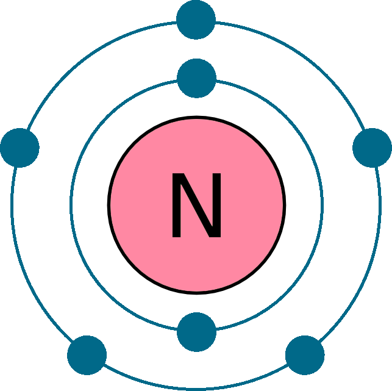
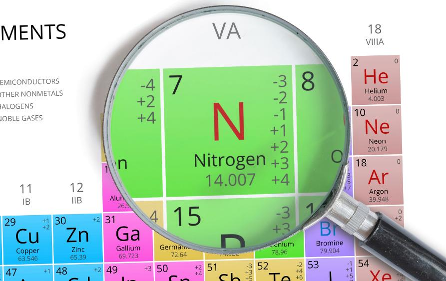

Азот
Азо́т (химический символ — N, от лат. Nitrogenium) — химический элемент 15-й группы (по устаревшей классификации — главной подгруппы пятой группы, VA), второго периода периодической системы Д. И. Менделеева, с атомным номером 7.Как простое вещество (при н. у.) азот — двухатомный газ (химическая формула — N2) без цвета, вкуса и запаха. Один из самых распространённых элементов на Земле. Основной компонент воздуха: 78 % объёма. Химически весьма инертен, однако реагирует с комплексными соединениями переходных металлов. Применяется как инертная среда для множества технологических процессов; жидкий азот — хладагент. Азот — один из основных биогенных элементов, входящих в состав белков и нуклеиновых кислот.

В 1772 г. шотландский химик Д. Резерфорд впервые описал свойства газа, не поддерживающего горения и дыхания, и назвал его «удушливым воздухом». В 1787 г. А. Л. де Лавуазье установил, что «удушливый» газ, входящий в состав воздуха, является простым веществом и предложил для него название «азот» (буквально – безжизненный). В 1784 г. Г. Кавендиш показал, что азот входит в состав селитры; в 1790 г. было предложено латинское название азот (от позднелат. nitrum – селитра и греч. γεννάω – рождать). К началу 19 в. окончательно сложилось понятие о химической инертности азота в свободном состоянии и выяснена важная роль связанного азота.

Азот как простое вещество — бесцветный газ, который не имеет запаха и плохо растворяется в воде. По своей молярной массе азот легче, чем воздух. Благодаря наличию тройной неполярной связи и относительно маленьким радиусам атомов азот имеет низкие температуры кипения и плавления: tпл = −210 °С и tкип = −196 °С. Аллотропных модификаций азот не имеет. Несмотря на то, что основное состояние азота — газообразное, он бывает еще и жидким. Например, 1 литр жидкого азота при нагревании до 20 °С превращается в 700 литров газообразного азота.
Азот в лаборатории может быть получен при нагревании водного раствора нитрита аммония: NH4NO2 = N2+2H2O. В промышленности азот извлекают из воздуха путём его глубокого охлаждения до жидкого состояния с последующим разделением, например, методом ректификации. Основная область использования азота – синтез аммиака с последующим получением из него азотной кислоты, удобрений и многих других веществ, содержащих связанный азот. Свободный азот применяют как инертную среду в химических и металлургических процессах, при перекачке горючих жидкостей и др.; жидкий азот – хладагент. Газообразный азот хранят и транспортируют в сжатом виде в стальных баллонах, жидкий азот – в сосудах Дьюара.

Азот химически малоактивен из-за наличия все той же тройной связи. Она же обуславливает малую термическую устойчивость соединений азота при нагревании. В химических реакциях азот может проявлять себя и как окислитель, и как восстановитель благодаря широкому спектру возможных степеней окисления.